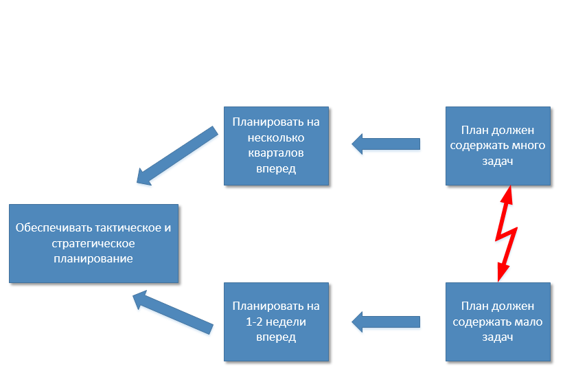

Карач С.В., @sergk
Сергей Карач,
Заместитель генерального директора
по информационнм технологиям
La persistencia de la memoria, 1931.
Salvador Dali.
(С) Карач С.В.: "правило пяти объектов внимания".
У вашего руководителя
мощность ограничена:
у него всего - "3 яблока".
Противоречие между тактическим и стратегическим планированием. (Нотация "Грозовые тучи". Э.Голдратт)
Инновации в проектном управлении: практический опыт
Сергей Карач,
Заместитель генерального директора по информационнм технологиям

twitter: @sergk ,
email: karachsv@ugsk.ru